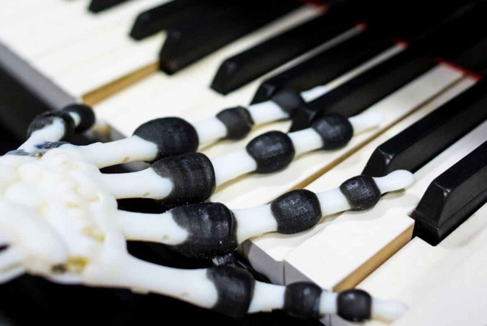
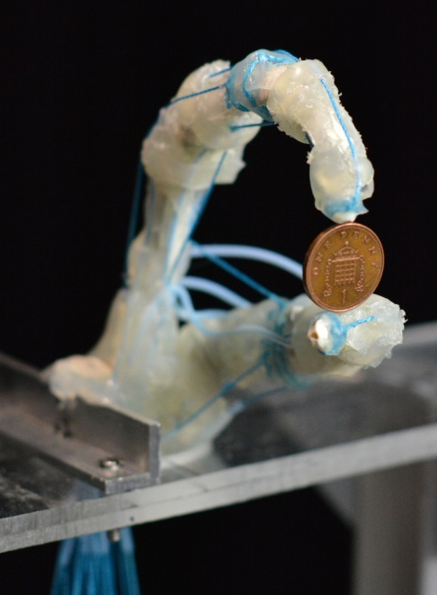
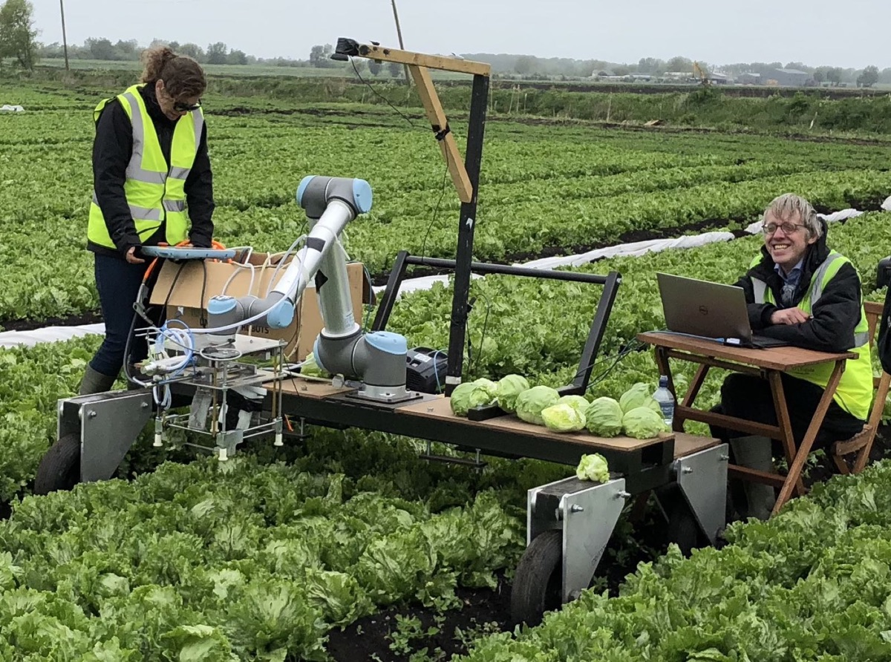

Embodied Intelligence
身体をもつことから、目的に向かう知的な振る舞いはどう生まれるのか。
The University of Tokyo × University of Cambridge / Bio-Inspired Robotics Laboratory
知能は、身体から生まれる。
BIRLは、身体・材料・環境の相互作用から知的な振る舞いがどのように創発するのかを研究しています。私たちはロボットを単なる応用技術としてではなく、知能の原理を理解するための実験系としてつくります。

01 / 03Material intelligenceロボットをつくることで、知能が生まれる原理を理解する。
身体をもつことから、目的に向かう知的な振る舞いはどう生まれるのか。
環境との接触は、どのように情報と知能の源になるのか。
単純な局所的相互作用から複雑な行動がどう創発し、経験を通して適応するのか。
形、ダイナミクス、知覚、行為は、どのように一つの知的システムとして働くのか。
02 — Current Research Platforms
Soft Robotics、EITセンシング、Manipulationは、BIRLの全体像ではなく、知能の原理を探る現在の実験プラットフォームです。身体・材料・知覚・制御・行為・環境が適応的な振る舞いを生む仕組みを研究します。
Materials / Morphology / Control
柔らかな身体を使い、形態と物理ダイナミクスが知覚・制御・適応そのものに参加する仕組みを探ります。

身体そのものを感覚器官にする
EITを用いて、柔らかく変形する身体全体から接触・変形・相互作用を読み出し、身体と知覚を一体化するセンシング原理を探ります。

Contact / Mechanics / Adaptation
受動的な力学、触覚フィードバック、行為、適応が結びつき、不確実な環境で目的ある動作を生む仕組みを研究します。

歩行と形態から、身体ダイナミクス、ロボット進化、自動実験、適応的操作、身体化されたセンシングへ。すべての実験系が「身体は知能に何をもたらすのか」を問い続けています。
身体化されたセンシングと柔軟な操作を、ばらつきのある作物や食品と接するフィールドロボットへ。
触覚的相互作用と安全な物理システムを、タッチの基礎研究から訓練・支援へつなぎます。
適応的操作、センシング、自動化を、柔軟な生産と予防的なインフラ保守へ展開します。
05 — Community / 注目イベント
Annual / Online / Worldwide
06 — ロボットギャラリー
BIRLabのアーカイブから、ロボットと実験の一部をご紹介します。画像を選ぶと拡大表示できます。
研究の動きを見る
ロボティクスは、動いてこそ伝わる。 実地試験、プロトタイプ、講演、研究室の実験をご覧ください。
チャンネルを見るX. Xu, D. Hardman & F. Iida
論文情報 → 2026 / IEEE Robotics and Automation PracticeH. Wang, H. Kunz, T. Adler & F. Iida
論文情報 → 2026 / Bioinspiration & BiomimeticsC. Laschi, L. Wen, F. Iida et al.
論文情報 → 2025 / Science RoboticsK. Gilday, C. Sirithunge, F. Iida & J. Hughes
論文を読む ↗09 — 最新ニュース
10 — People / Join us
BIRLは東京とケンブリッジを結び、身体・材料・環境との相互作用から知能がどう生まれるかという共通の問いに取り組んでいます。
メンバーを見る大学院工学系研究科 精密工学専攻
工学部